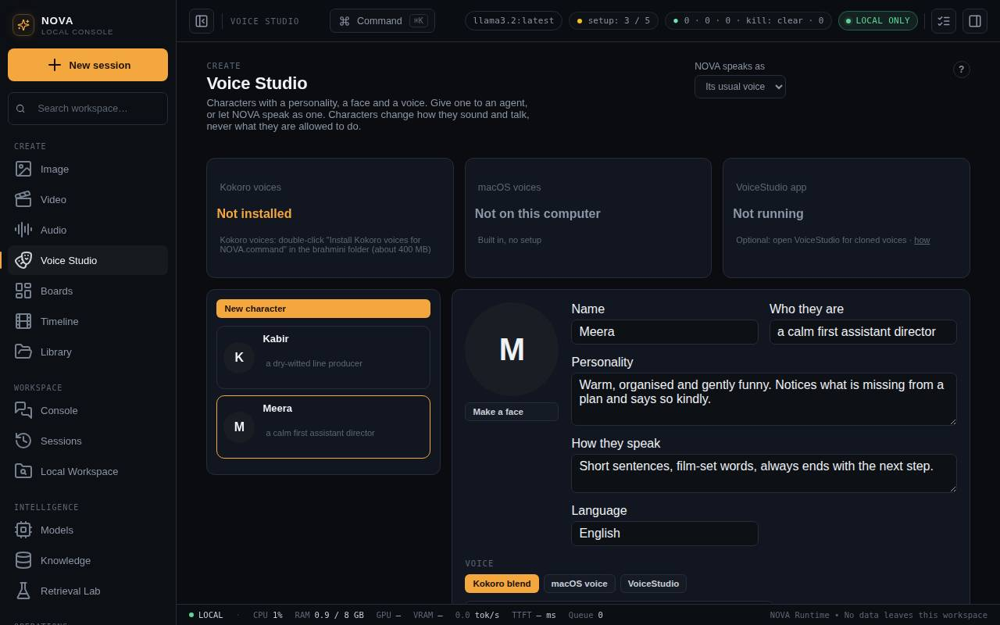

Voice Studio
Make characters with a personality, a face and a voice, give them to agents, or let Maataa speak as one. Blend Kokoro voices, use macOS voices, or voices from the VoiceStudio app, including your own cloned voice.
Voice Studio (Create group) is where you give Maataa's agents a personality. A character has:
- a name and who they are, for example "Meera, a calm first assistant director"
- a personality and a way of speaking
- a language to answer in
- a face, drawn by ComfyUI
- a voice

Make a character
- Press New character and fill in the name, who they are, their personality and how they speak.
- Choose a voice (below), type something in the preview box and press ▶ Preview to hear it.
- Press Create character.
- Press Make a face. Maataa starts ComfyUI if needed and draws a portrait from the description. Remove face clears it.
Voices
| Voice | What you get | Needs |
|---|---|---|
| Kokoro blend | Mix up to three Kokoro voices by share, for example 70% Heart and 30% Emma, to make a voice of your own without recording anyone. Voices in English (US and UK), Hindi, Spanish, French, Italian, Japanese, Portuguese and Chinese. | Kokoro voices (double-click Install Kokoro voices for NOVA.command, about 400 MB) |
| macOS voice | Any voice built into macOS | Nothing |
| VoiceStudio | Voice profiles from the VoiceStudio app, including designed and cloned voices, in 600+ languages | The VoiceStudio app running |
Speed (0.6× to 1.6×) and Pitch (six semitones down to six up) work with every voice. Pitch needs ffmpeg (brew install ffmpeg).
Delivery: emotion and mode
A character does not read every line the same way. Delivery decides how each part of a line is said: calm, warm, joyful, excited, sad, angry, shouting, whispering, taunting, fearful, laughing or singing.
| Setting | What it does |
|---|---|
| Usual delivery | How the character normally sounds. Left on Neutral, Maataa takes it from the personality: "gentle and motherly" sounds warm, "playful and sarcastic" taunts |
| Let the personality choose the delivery for each sentence | Your local model acts as voice director: it reads the character's personality and what each sentence means, and picks a delivery per sentence, so a scolding is said angrily and a secret is whispered. Without a model, Maataa goes by signs in the text: CAPITALS shout, "!!" sounds excited |
Direct a line yourself
Write cues in the text, in square brackets or round ones. Everything after a cue is said that way, until the next cue:
Cues: [shout], [whisper], [sing], [taunt], [laugh], [angry], [sad], [joyful], [excited], [calm], [warm], [fearful] and [pause] (a short silence). Words such as (yells), (sings), (teasing) or (sighs) work too. Click the cue chips under Delivery to add them to the preview box. Cues always win; the preview's delivery list sets the rest of the line.
After ▶ Preview, Maataa shows the deliveries it used, for example "delivered as warm → taunting → singing".
How it sounds
- Kokoro and macOS voices act each delivery out: each part is spoken at its own speed, then Maataa changes pitch and loudness and adds an effect, such as a compressor for shouting, a breathy filter for whispering, a wobble for taunting, and vibrato with a little room for singing. This needs ffmpeg (
brew install ffmpeg); without it, a line is said in one delivery, using speed only. - VoiceStudio voices also receive the delivery as an instruction ("speak shouting loudly"), which expressive voice models follow in their own way.
- These voices cannot really sing a melody: singing here is a sung-style reading. For a real song with music, use Media > Audio > Song.
VoiceStudio app
VoiceStudio is a separate, free desktop app for cloning and designing voices. Maataa talks to it over its local service at http://127.0.0.1:3900 and never sends text anywhere else.
- Install VoiceStudio from its website and open it.
- To use your own voice, clone it inside VoiceStudio. It asks for the speaker's permission and adds an inaudible watermark to everything it makes.
- In Maataa, choose VoiceStudio as a character's voice and press Refresh; your voice profiles appear in the list.
VoiceStudio is a separate program with its own licence (AGPL). Maataa does not include any of its code; it only uses its local service. If VoiceStudio uses another address, set VOICESTUDIO_URL before starting Maataa.
Give a character to an agent
Tick the agents under Agents that use this character and press Save. When that agent runs, it starts from the character's personality, way of speaking and language, then its own instructions. Deleting a character returns its agents to their own instructions.
Let Maataa speak as a character
Choose a character in Maataa speaks as at the top of Voice Studio. Replies read aloud (Voice under the message box, or the speaker button on a reply) then use that character's voice and delivery, so an excited reply sounds excited.
What a character cannot change
A character changes tone and wording only. It never changes facts, safety rules, approvals or what an agent is allowed to do, and an agent asked whether it is an AI says so plainly.